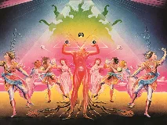
Le Sacre du printempsexistant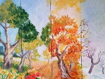
Les Quatre Saisonsexistant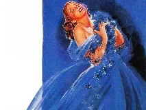
Rhapsody in Blueexistant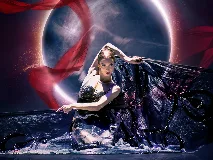
Boléro (Ravel)existant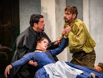
Les Noces de Figaroexistant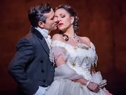
La Traviataexistant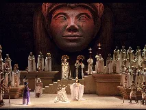
Aidaexistant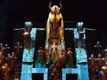
Nabuccoexistant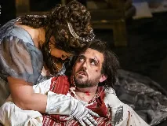
Toscaexistant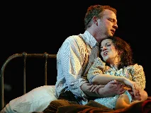
La Bohèmeexistant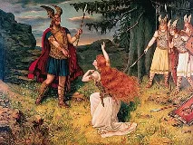
L'Anneau du Nibelungexistant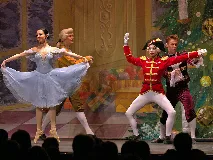
Casse-Noisetteexistant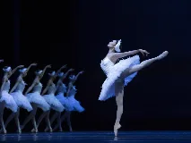
Le Lac des cygnesexistant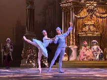
La Belle au bois dormant (ballet)existant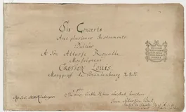
Concertos brandebourgeoisexistant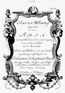
Variations Goldbergexistant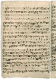
L'Art de la fugueexistant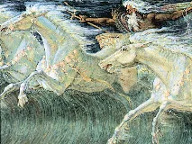
Water Musicexistant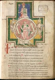
Carmina Buranawiki-fr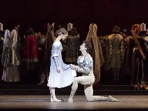
Roméo et Juliette (Prokofiev)bing